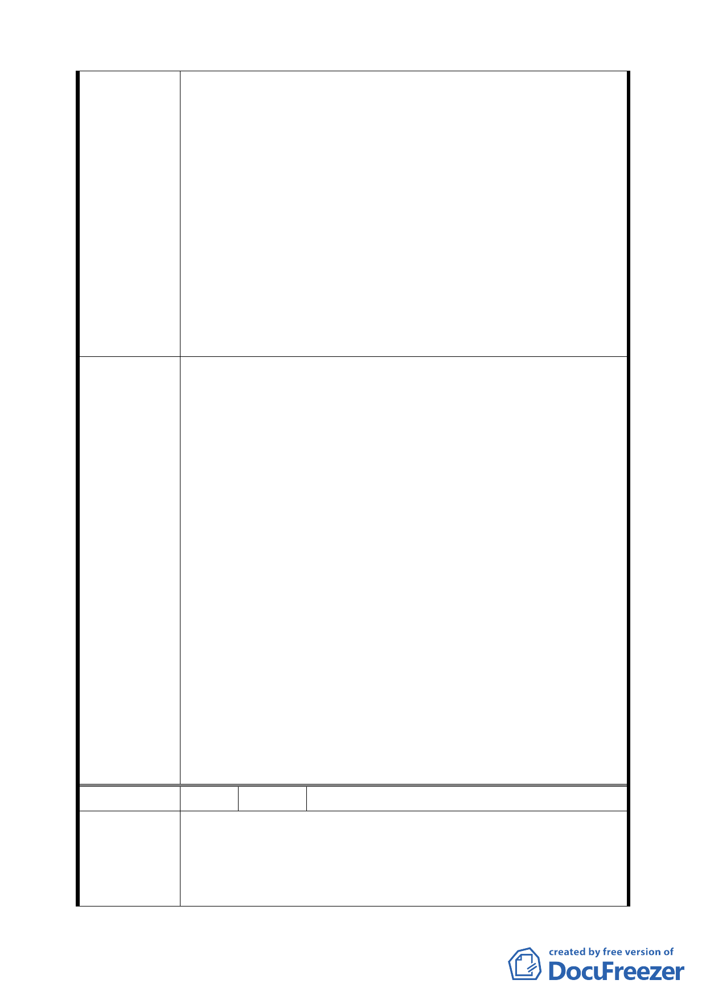

規定及都市設計管制內容,皆較區內其他住宅區(供商務住
宅使用)嚴格等不公平問題,建請貴府放寬本街廓土地使用
強度容積率為 300%,使用組別參照第三之一種住宅區規定,
或比照「綜合設計放寬與容積獎勵規定」或「台北市都市更
新自治條例」,對於所留設之公共開放空間給予容積獎勵,以
維護本街廓土地所有權人權益。
6.本街廓緊臨商業區且與 C5 商業區同為一完整街廓,而 C4、
C5 為供應地區購物中心、娛樂設施為主，屆時將帶來大批
人潮,且與世貿展覽館近在咫尺,而以展館之未來攤位規模將
達 5000 攤之數,以信義世貿展覽館之實際使用狀況為 例,可
預見將來本區將是另一信義路之翻版,建請酌情放寬本區之
停車獎勵為要。
1.同意發展局所提「R6 街廓本府於 85 年擬定細部計畫即指定
留設 20 公尺帶狀式開放空間以延續毗鄰商業區人行動線，
且於辦理全區市地重劃及區段徵收作業時，即整體考量進行
配地，經試算規範留設 20 公尺帶狀式開放空間之住宅區，
不致影響開發權益，故維持原計畫規定」，維持原公展計畫。
2.同意發展局所提「R6 街廓已完成區段徵收發還土地所有權
人，如提高基地開發規模門檻，將影響地主權益，故仍維持
原計畫」，維持原公展計畫。
委員會決議
3.依發展局回應說明擬修正規定為帶狀式開放空間植栽部分
以不開挖地下層為原則。
4.同意陳情民眾所提建議，取消公展計畫中建物高度之管
制，回歸本市土地使用分區管制規則規定辦理。
5.同意發展局所提「住宅區不得適用綜合設計規定」，維持原
公展計畫。
6.同意發展局所提「未來交通運輸將以大眾運輸為主，且週
邊商業區之法定停車已要求須依本市土地使用分區管制規
則之 1.8 倍留設，可滿足商業區及會展衍生停車之需求，故
本街廓並無須增設停車空間之必要」，維持原公展計畫。
編 號 4 陳情人 林朝聘
土地標示：南港區經貿段 72 地號（R6 街廓東北側）。
陳情理由
1.R6 東北側限高為 40m，但其同一街廓（西南側）為 60m，
且其東西兩街廓（R8 及 C5）皆為 60m，就整體都市設計而
言，忽然降低該區量體，似乎有不合理之處。
19